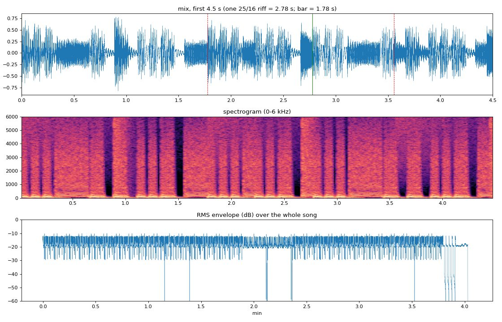
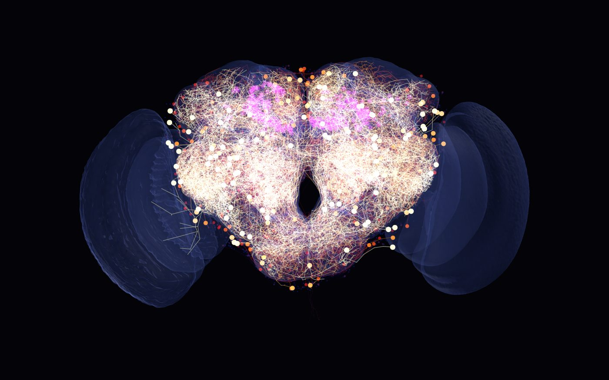
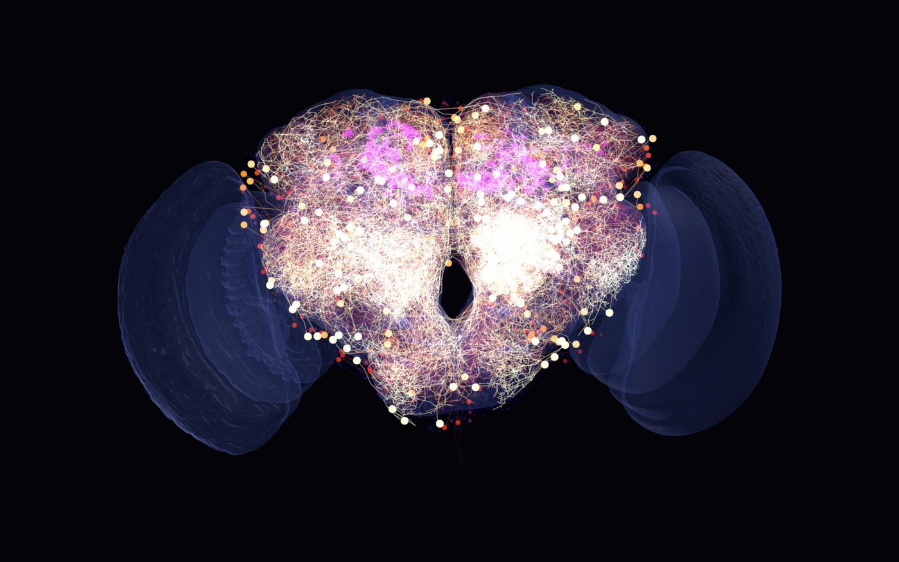
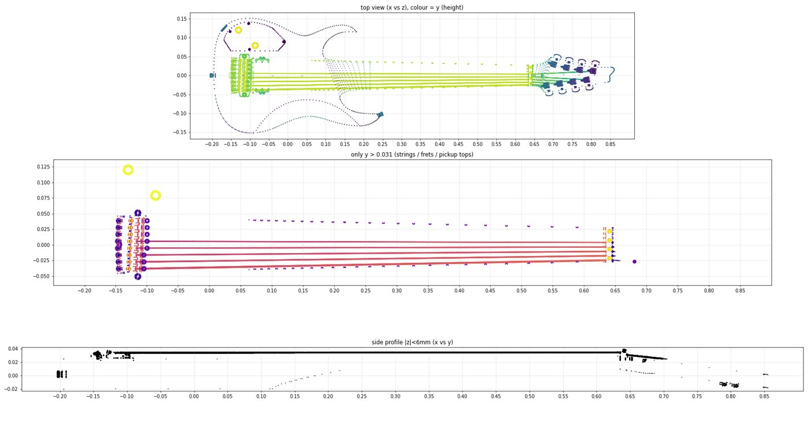

The real synaptic wiring of a male Drosophila is used as a fixed "reservoir" that learns to play Meshuggah's guitar part. The same neurons spike in a simulation you can watch, and a scanned fly body plays the notes on an Ibanez M8M. Below: the whole pipeline, what each step does in plain words, and every tool it runs on.
Everything starts from files on the left and ends in four things on the right: a MIDI performance, a live brain window, the audio you hear, and a fly on stage. The teacher band is the tab; the brain band turns anatomy into an instrument and learns from the teacher; the sound band makes it audible; the body band makes it a show. The orange path is the one that makes the music.
Each step below reads the same way: what goes in, what the code does with it (in plain words, then the real mechanism), and what comes out. Badges name the library or framework doing the work.
MaleCNS, the complete EM reconstruction of a male fruit fly's brain and nerve cord (~166,000 neurons), served by the neuPrint graph database with your API token.
A Cypher query asks for the 2,000 most connected central-brain neurons plus every PAM / PPL1 dopaminergic neuron (332 — the fly's reward and punishment cells), then every synaptic connection between them. Cached to parquet so it's pulled once.
2,318 neurons · 236,870 connections · 3.6 M synapses — each edge has a synapse count and each neuron a predicted neurotransmitter, cell type and 3D soma position.
The connection matrix W: every edge weighted 1 + log(synapses), signed + for acetylcholine, − for GABA and glutamate (a simplification — real sign depends on the receptor). Plus a "drummer": three pulse streams.
Every neuron updates as x ← (1−a)·x + a·tanh(W·x + input). Nothing inside W is trained — only a global gain and a spread of time constants (a 32nd note to a whole riff cycle). This is reservoir computing: a fixed nonlinear system whose response to the drums is rich enough to decode a song from.
A state matrix of 11,008 timesteps × 2,318 neurons (one row per 64th note of the song) — the "ripples" the read-out reads.
The drummer (inputs): ① the 4/4 drum pulse (quarter notes, downbeat, snare on 3); ② the riff cycle — Rational Gaze's 25/16-over-4/4 polymeter, with phrase boundaries taken from the tab's repeat structure; ③ the song form (which section, how far through it). Each stream carries a Fourier "phase code" (sines and cosines of where-in-the-bar). Without those codes the brain's activity collapsed to a rank-20 blob and accuracy stalled at 80 %.
A tab-only PDF (Guitar Pro export): fret numbers on 8 lines, rhythm drawn as stems, beams, dots and rests, ties, repeat signs, 1st/2nd endings, "3x", P.M. marks, ½ bends.
A small optical-music-recognition step reads the PDF's vector layer: fret numbers from the text (string = which staff line), durations from beam levels (8th / 16th), dot glyphs, rest glyphs; parenthesised numbers and hidden-number stems are ties. Every bar is checked to add up to 16 sixteenths; repeats are expanded.
78 written bars → 172 played bars, 1,272 notes at 133 BPM in F standard — mostly open low F and F♯ at fret 13, the "minor-ninth leap" the analyses describe.
The state matrix X from step 2 and the tab as a piano roll Y (note-on, note-held, velocity per pitch per 64th note).
Ridge regression: W_out = (XᵀX + λI)⁻¹ XᵀY. One closed-form solve — no backprop through the brain. Then the same drums are replayed, the read-out's output is thresholded into note events (chords allowed) and written as MIDI.
Onset F1 0.990, pitch accuracy 1.000 — 1,272 of 1,272 notes. Honest framing: this is memorising the song through the brain's dynamics; the connectome is the medium, the read-out is the tracing paper.
Who wrote the notes? The piano roll the reader learns from is the tab, converted by code (note on / held / velocity per 64th note). The MIDI that comes out is decoded from the simulated brain's activity through the trained reader — so mechanically the brain produces it, but its information content is the tab's. And the fly's wiring is not what makes it work (cli controls, output/controls.json): with the same inputs, targets and fit, the connectome with its synaptic partners shuffled scores F1 0.995, a random network of the same size 0.996, the real wiring 0.990, the inputs alone with no brain 0.000, and a 10× smaller random network 0.087. Stage A needs a large fixed nonlinear reservoir; the fly's is a fine one, not a special one. The connectome is the medium the song is written on, not the composer.
The trained model, a 16-bar excerpt, and a "does it still groove?" score: autocorrelation at the 25-sixteenth lag, low-string focus, chug ratio, density, syncopation, pitch vocabulary, and a novelty band (deviate from the memorised riff — but not too far).
An evolution strategy (CMA-ES) jitters a few knobs — input gains, a small (rank-8) tweak to the read-out, and how strongly a scalar reward is injected into the PAM (+) and PPL1 (−) neurons, the fly's own reinforcement pathway — and keeps the jitters that score higher.
A second model whose take deviates from the tab while keeping the groove (fitness 0.701 → 0.726). Small, but it's the only genuinely creative step — say so.
Is this reinforcement learning? It solves an RL problem — try, get a scalar reward, no teacher gives the right notes — but with an evolution strategy over a dozen knobs rather than per-note decisions, a value function or a gradient. And the dopamine current only modulates activity: no synapse in the connectome changes, so say "reward enters through the fly's real reward neurons", not "the fly's brain learns from dopamine".
Live version (play --improvise): the same search runs during the performance. While the fly plays an 8-bar phrase, a planner process with four workers auditions ~60–140 candidate versions of the next phrase through the brain (from the exact state it will be in at the boundary), commits the best one 2.5 s before the boundary, renders it through the sampler into the guitar stem that is already streaming, sends the notes to the fingers and the live spiking brain, and injects the phrase's treat into the PAM/PPL1 neurons for the phrase after. The first phrase is always the faithful replay; a Live learning button on the stage switches improvisation on and off at the next boundary. Every performance is a different take.
The knobs are musical. A candidate is nine numbers, and every one transforms the inputs the brain is driven with, never the read-out: how hard the drum / riff / form streams hit the brain; the dopamine gain; a polymetric displacement of the riff against the drum grid; a stretch of the riff cycle (a new polymeter — 23/16, 27/16…); a blend of another section's identity into the form stream; and the decode threshold. An earlier version shoved the read-out weights randomly and produced off-grid blips and wrong notes; now the read-out stays on ground it knows. Guard-rails on top: pitches masked to the section's vocabulary, 16th grid, note count near the tab's, the tab's velocity, and a score that rewards keeping the section's chug/leap mix. One knob, --wildness, sets how far it may stray.
👍 / 👎 — you are part of the reward. Press K / J on the stage (or + / − in the brain window) while a phrase plays: the vote adds to the treat going into the dopamine neurons for the next phrase, re-weights the scorer toward the features of the phrase you liked (the HUD shows the drift as "taste"), and nudges the search toward the liked knobs. Over a show the fly learns the listener's taste — a real reinforcement signal, not a heuristic.
The MIDI from step 4 and 8ridge lite's 61 recorded guitar samples (one per semitone, E1–E6, "Natural" and "Tuned" sets) — an open-source JUCE plugin.
Its sampler engine is ported line-for-line: pitch ratio, linear interpolation, 5 ms / 10 ms envelopes, velocity gain, retrigger release, even its quirk of layering a re-pitched E1 under F1–G2. Then, not part of the plugin: an amp + 4×12 cab model, palm mutes only where the tab says P.M., and double-tracking — Natural set left, Tuned set 7 ms late right.
Wide-stereo guitar stem, synth-drum stem, your backing track aligned (bar 1 at 0.28 s, 133.00 BPM by onset cross-correlation), and the mix.
The same 236,870 connections, the same drummer streams, plus a "the fly hears itself" stream from the notes it plays; and the 3D skeleton of every one of the 2,318 neurons.
Leaky integrate-and-fire neurons with exponential synapses (inhibition 4× stronger, for balance) run in Brian2 for the whole song. Skeletons are fetched with NAVis, healed, Strahler-pruned and downsampled; all of them are drawn as one GPU line whose colour comes from each neuron's last-spike time — yellow → red → blue as it fades.
1.7 M spikes at ~2.4 Hz per neuron, population rate correlating 0.57 with the chugs — the brain visibly pulses with the riff. Magenta halos mark the dopaminergic cells; translucent shells are 76 brain regions.
NeuroMechFly (EPFL): a micro-CT scan of a real fly with 70 articulated parts and hinge joints; your Ibanez M8M mesh with PBR textures; the notes with the tab's fingering; the spike raster.
The body becomes a glTF with the same joint tree; the guitar mesh is measured (bridge, nut, string plane, all 24 fret wires by ray-casting). Each front leg is solved as a planar arm: elbow by two-bone IK, the fretting wrist under the neck with fingers curling up onto the fret, the picking wrist over the top edge with the hand hanging onto the strings. Head-bangs on kick/snare; wings flare on accents; the brain floats as a hologram.
A browser page at 60 fps: the fly plays every note on the real fret, with stem toggles (fly guitar / backing / drums), camera presets and a placement mode for the guitar.
A folder of djent tabs — 11 Guitar Pro files: Meshuggah, Monuments, Periphery, Unprocessed (the fly learns from transcriptions, not audio). The rhythm-guitar track is picked automatically; every song is transposed so its lowest open string is the fly's low F, so riff shapes survive and the 8-string on stage stays right.
One reader for all songs. Each song's sections get a fixed 16-number section code instead of a per-song one-hot, and the reader is fitted to each song's 16 most characteristic bars of riff. A linear reader of 2,318 neurons holds about one song (11 whole songs: F1 0.02) — so this reader also gets 4,000 random tanh features of the same neuron states: still reading the brain, with a bigger pen → F1 0.96 across the 11 riffs. To generate, the brain is driven with a bar grid, a riff cycle of your choice (23/16, 25/16…) and a section identity that is a blend of two learned codes — material the reader was never shown. The knobs, the treats and your 👍/👎 steer it.
Live: play --generate (the 🎸 Own riffs button) — the fly plays riffs it makes up over its own drums: hats keep the tempo, the kick doubles every chug, the snare sits on 2 & 4 or in thirds. Offline: cli generate → MIDI + WAV. Honest framing: interpolations of what it learned, graded by a groove heuristic and by you — "made from its synapses" in the sense that the fixed wiring shapes how the learned riffs mix.
This is the one diagram to pause on in the video. The drums go into three separate groups of neurons; the connectome does the mixing (nothing in it changes); the only thing that learns is the thin read-out layer on the right, fitted with one equation.
When you run play, the audio card's DAC time is the master clock. Every frame, the conductor reads that time and moves the three displays in lockstep — so the spikes you see and the fingers you watch are at the same moment you hear.
player.py) owns the clock. The brain window and the stage never guess the time — they are told it, so replaying the raster, stepping a live simulation, or driving the real plugin all stay in sync with what's coming out of the speakers. With --improvise a fourth box hangs off the clock: the planner process (live.py) that writes the next phrase into the guitar stem before the playhead reaches it, and reports candidates / winner / treat to the stage's HUD over the same WebSocket (which now also carries commands back: the Live-learning and stem buttons).The project is more impressive when the claims are precise. Everything in the left column is measured biology or a real file; everything on the right is an engineering choice layered on top.
| Component | Real | Modelled |
|---|---|---|
| Wiring | real every neuron and every synapse count comes from the MaleCNS EM reconstruction; nothing is added or removed | model edge weight = 1 + log(synapses); sign from predicted neurotransmitter (ACh +, GABA/Glu −); one global gain |
| Neuron dynamics | real cell types, transmitters, 3D shapes, dopaminergic identity (PAM/PPL1) | model tanh rate units (composer) and leaky integrate-and-fire units (display); time constants chosen for music |
| The song | real the tab you supplied, read note-for-note; your backing track, aligned | model Stage A memorises it through the reservoir (F1 0.990); Stage B is the only creative part and it is small |
| The sound | real 8ridge lite's recorded 8-string samples, its engine ported faithfully | model amp/cab approximation, palm-mute gating, double-tracking, synth drum kit |
| The spikes you see | real the same 236,870 connections and the real 3D skeletons | model a Brian2 simulation driven by the drums — not a recording from a fly |
| The fly | real NeuroMechFly micro-CT body with its real joint tree; your M8M mesh | model the guitarist posture, IK, head-bangs and wing flares are animation |
| Its own riffs | real 11 real djent tabs, transposed; the same fixed brain; your 👍/👎 | model a two-layer reader (random tanh features of the neuron states) fitted to riff excerpts; new riffs are interpolations between learned section codes, filtered by guard-rails and graded by a heuristic — "generated from its synapses" only in the sense that the wiring shapes the mixing |
| Does the fly's wiring matter? | measured real wiring F1 0.990 · shuffled partners 0.995 · random same-size network 0.996 · inputs alone 0.000 · 10× smaller random 0.087 (output/controls.json) | so the specific fly wiring is not the source of the music — any large fixed nonlinear reservoir works; the connectome is the medium, the tab is the content, the reader is the only thing that learned |
Python 3.10 on Windows for the science and audio; a plain HTML page with three.js for the stage. No cloud, no training GPUs — the heaviest step (the whole-song spiking run) takes 85 seconds on a desktop. Versions are the ones actually installed in .venv.
| Tool / source | What it is | What it did here | Where |
|---|---|---|---|
| MaleCNS v1.0 | Janelia FlyEM's EM reconstruction of a male fruit fly's brain + nerve cord (~166 k neurons), CC-BY | The wiring (every synapse count), cell types, predicted neurotransmitters, soma positions, skeletons, 76 brain-region meshes | connectome.py, skeletons.py |
| neuPrint | Janelia's connectome server: a neo4j graph database queried in the Cypher language, with a personal token | One Cypher query for the top-2,000 neurons + all PAM/PPL1, one for the edges between them | connectome.py, .env |
| NeuroMechFly / flygym | EPFL's micro-CT fly body: MuJoCo MJCF model with 70 parts and hinge joints, plus meshes and a standing pose (Apache-2.0) | The fly on stage — its joint tree became the rig the IK moves | third_party/neuromechfly, stage_export.py, fly.js |
| 8ridge lite | James Stubbs' open-source 8-string guitar sampler VST (JUCE / C++, GPL-3): 61 WAV samples + a SamplerVoice engine | The sound of the guitar; its engine was ported to Python line-for-line and its samples are what you hear | third_party/8ridgelite, bridgelite.py |
| Ibanez M8M model | Your OBJ mesh + PBR textures of the guitar | Measured (bridge, nut, 24 fret wires by ray-cast) and converted to glTF | third_party/ibanez-m8m, stage_export.py, guitar.js |
| Your tab · .gp · backing | Tab-only PDF (Guitar Pro export), GP7 .gp file, backing-track mp3 | The teacher (PDF is the default source), and the record the fly plays along to | data/, pdftab.py, gpif.py, record.py |
| Tool | What it is | What it did here | Where |
|---|---|---|---|
| Python 3.10.11 | In a venv (.venv), packages via pip, pinned in requirements.txt | All science, audio and export code — 21 modules, one argparse CLI (python -m flybrain_composer.cli …) | flybrain_composer/ |
| python-dotenv | Loads .env into the environment | Keeps the neuPrint token out of the code and out of git | config.py |
| PowerShell | Windows shell | Start-Process launchers for the long jobs (skeleton fetch, spiking run, Stage B) so they outlive a terminal | output/run_*.ps1 |
| Jupyter · matplotlib · plotly | Notebooks and plotting | Exploring the dataset and sanity-checking the reservoir (rank, spectral radius, memory) | notebooks/01_…, 02_… |
| tqdm | Progress bars | Long loops: reservoir run, LIF simulation, sample rendering | several |
| http.server (stdlib) | Python's built-in static server, subclassed to send no-cache headers | Serves the stage page; the no-cache headers stop the browser holding stale ES modules | stage_server.py |
| Claude Code | AI coding agent (Anthropic) in the desktop app | Wrote and ran the code with you — pulls, fits, renders, IK iterations, this page | — |
| Tool | What it is | What it did here | Where |
|---|---|---|---|
| neuprint-python 0.6 | Official Python client for neuPrint | Client.fetch_custom() runs the Cypher queries and returns DataFrames | connectome.py |
| NAVis 1.12 | Neuron analysis & visualisation toolkit (Schlegel lab) | Fetch the 2,318 skeletons + ROI meshes (navis.interfaces.neuprint), heal breaks, Strahler-prune, downsample to ~350 nodes each | skeletons.py |
| octarine3d 0.8 + navis plugin | NAVis's GPU viewer | The live brain window: one merged line object per brain, recoloured per frame from spike times | neuroviz.py |
| pygfx 0.17 · wgpu 0.31 · glfw 2.10 | Render stack under octarine: scene graph → WebGPU-style API → Vulkan on the RTX 2060, window via GLFW | Vertex colormaps, point sprites for somas, translucent ROI meshes, off-screen screenshots | neuroviz.py |
| Brian2 2.8.0.4 | Spiking neural-network simulator (equations as text, NumPy code generation — no C compiler needed) | 2,318 leaky integrate-and-fire neurons with exponential synapses over the whole song → 1.7 M spikes; also a numpy twin for --live | snn.py |
| pandas 2.3 · pyarrow 25 | DataFrames and the Parquet file format | Every cache: neurons, edges, skeletons, render cache, spike raster | data/cache/ |
| Pillow | Image library | Guitar texture resizing (2K PBR maps) and mesh-map debug images | stage_export.py |
| Tool | What it is | What it did here | Where |
|---|---|---|---|
| NumPy 2.2 | Arrays | The reservoir update, the Fourier phase codes, the piano-roll targets, note decoding, fitness heuristics, all DSP | everywhere |
| SciPy 1.15 — sparse | Sparse matrices + eigs | The 2,318 × 2,318 signed weight matrix (236,870 non-zeros) and its spectral radius | connectome.py, reservoir.py |
| SciPy — linalg | Cholesky solve | Stage A ridge regression (XᵀX + λI)⁻¹XᵀY in one solve (~4 s) | train_supervised.py |
| SciPy — signal | Filters, FFT convolution | Amp/cab biquads, onset envelope + cross-correlation for backing-track alignment | bridgelite.py, record.py |
| SciPy — spatial.transform | Rotations | Frame changes when converting the guitar and fly meshes | stage_export.py |
| cma 4.4 | CMA-ES evolution strategy (Hansen) | Stage B offline (12 knobs incl. a rank-8 read-out tweak) and live (nine musical knobs, one strategy across the show, nudged by 👍/👎) | train_reward.py, live.py, fitness.py |
| corpus.py | Multi-song learning | Loads a folder of tabs, picks the rhythm track, transposes to the fly's tuning, excerpts each song's riffs, fits one reader (shared section codes, 4,000 random tanh features, Gram matrices accumulated per song), builds the synthetic frame and the riff-locked drums for the generator | corpus.py, data/songs/ |
| scikit-learn | ML toolkit | Installed for comparison runs only — the shipped ridge is the hand-written SciPy solve | — |
| Tool | What it is | What it did here | Where |
|---|---|---|---|
| PyMuPDF 1.28 | PDF library (MuPDF bindings) | Reads the tab PDF's text spans and vector drawings — staff lines, stems, beams, dots, rest glyphs — for the home-made OMR | pdftab.py |
| PyGuitarPro 0.11 | Reader for Guitar Pro 3–5 files | Fallback transcription source (.gp3/.gp4/.gp5) | transcription.py |
| xml.etree (stdlib) | XML parser | Custom parser for GP7 .gp files (a zip holding score.gpif XML): notes, repeats, annotations | gpif.py |
| pretty_midi 0.2 | MIDI file library | Writes the fly's performance as .mid (and reads it back for diffing against the tab) | sonify.py |
| mido 1.3 · python-rtmidi 1.5 | MIDI messages + real-time MIDI ports | play --midi-out: note on/off to a port (via loopMIDI) so the real 8ridge lite VST can play in a DAW | player.py |
| soundfile 0.14 (libsndfile 1.2) | Audio file I/O | Reads the 61 samples and your mp3, writes 48 kHz stems and mixes | bridgelite.py, record.py |
| sounddevice 0.5 (PortAudio) | Audio streaming | Plays the stems and provides the DAC time that is the master clock at show time; live G/B/D stem toggles | player.py |
| 8ridge lite engine (port) | JUCE Synthesiser/SamplerVoice logic rewritten in NumPy | Pitch ratio, linear interpolation, 5/10 ms ADSR, velocity gain, retrigger release, the E1-layer quirk, then amp + 4×12 cab, palm-mute gating, double-tracking | bridgelite.py |
| Tool | What it is | What it did here | Where |
|---|---|---|---|
| trimesh 5.1 | Mesh library | Loads the fly STLs and the M8M OBJ, ray-casts the fret wires, decimates ROI meshes, writes .glb | stage_export.py |
| websockets 16 | asyncio WebSocket server | The conductor → stage link on port 8765: {t, spikes, notes} 30× per second | player.py |
| three.js r170 | WebGL 3D library, vendored as ES modules (no bundler) | Scene, cameras, lights, glTF loading, the fly rig, the guitar, the brain hologram | stage/vendor, app.js |
| three addons | GLTFLoader, OrbitControls, EffectComposer + UnrealBloomPass, BufferGeometryUtils | Model loading, orbit camera, the bloom glow on spikes | stage/vendor/jsm |
| GLSL (custom shaders) | Hand-written vertex/fragment shaders in ShaderMaterial | Brain glow: a DataTexture of last-spike times per neuron drives colour and alpha, fading yellow → red → blue | brain.js |
| Hand-written IK | Planar two-bone arm solver + CCD, joint limits, β-search for a reachable elbow | Fretting hand under the neck onto the right fret, picking hand over the strings, head-bang, wing flare | fly.js, app.js |
| WebAudio API | Browser audio | Standalone mode plays the three stems with per-stem gain toggles in the page | app.js |
| WebSocket API · localStorage | Browser APIs | Follow the Python conductor; remember your guitar placement between reloads | app.js |
| glTF 2.0 (.glb) | 3D interchange format | Fly (with joint hierarchy), guitar (with PBR textures), region meshes | stage/data/*.glb |
How to say it in one breath: "Data from Janelia's MaleCNS connectome via neuPrint; NAVis for the neuron shapes; NumPy/SciPy for a reservoir with a ridge read-out; CMA-ES for the reward stage; Brian2 for the spiking brain shown in an octarine/pygfx window; PyMuPDF to read the tab; a Python port of the 8ridge lite sampler for the guitar sound; trimesh to export the NeuroMechFly body and the M8M to glTF; and three.js with hand-written IK and shaders for the stage, synced over a WebSocket to the audio clock."
One day, one machine. Every milestone below points at the file it produced (with its size and timestamp) or the number it logged, so each claim in the video can be backed by something you can open. Times are the file-modified times on disk.
| Time | Milestone | What happened | Proof |
|---|---|---|---|
| 01:17 | Environment | Python 3.10 venv; 40+ packages installed. brian2's newest release had no Windows wheel for 3.10 → pinned to 2.8.0.4. | output/pip_install*.log (3 attempts) · requirements.txt |
| 01:24 | First pull — failed | neuprint-python doesn't accept Cypher parameters (TypeError: unexpected keyword 'superclasses'). Fixed by inlining the literals into the query. | output/pull.log — the traceback is still there |
| 01:26 | Connectome pulled | Top-2,000 central-brain neurons + all PAM/PPL1 dopaminergic neurons, and every edge between them, from male-cns:v1.0. | neurons.parquet 128 KB → 2,318 neurons (332 DANs; ACh 977 · GABA 583 · DA 352 · Glu 292) · edges.parquet 644 KB → 236,870 edges, 3,610,233 synapses |
| 01:28 → 01:32 | Skeletons | 3D skeleton of every neuron fetched in 24 resumable chunks (detached PowerShell job), plus the brain-region meshes. | skeletons.parquet 37.8 MB → 3,474,363 nodes / 2,318 neurons · rois/ 76 meshes · skeletons.log "EXIT=0" |
| 01:35 | Reservoir | Signed, log-weighted sparse W; leaky-tanh update with heterogeneous time constants; spectral radius estimate. | reservoir.py, model.py · notebook 02_reservoir_sanity.ipynb |
| 01:38 | First render | octarine/pygfx window draws all skeletons — proof the GPU path (wgpu → Vulkan) works on this box. | render_check.png ↓ image 1 |
| 01:47 → 01:58 | Render cache | EM skeletons are bushy; plain downsampling did nothing. Strahler-pruning then downsampling → 350 nodes/neuron. | skeletons_render.parquet 11.3 MB → 922,697 nodes · render_cache.log "2318 neurons … 153 s" |
| 01:48 → 01:52 | GP7 parser | Your .gp file: zip → score.gpif XML → notes, repeats, "25/16 ×5 + 3/16" annotations. | data/rational_gaze.gp · gpif.py (12 KB) |
| 02:02 | Spiking model | Brian2 LIF network on the same wiring; NumPy twin for live mode. | snn.py |
| 02:19 | Brain snapshot | First spike-coloured frame: neurons that fired recently glow, dopaminergic cells in magenta. | brain_20.0s.png 3200×2000 ↓ image 2 |
| 02:22 | Stage B code | Fitness heuristics + CMA-ES loop with reward injected into PAM (+) / PPL1 (−). | fitness.py, train_reward.py |
| 02:25 → 02:33 | Your material | Tab PDF #1, then the tab PDF you said to use instead, then the backing track. | data/rational_gaze.pdf 105 KB · rational_gaze_backing.mp3 5.0 MB |
| 05:33 | OMR + Stage A | Home-made PDF tab reader (stems, beams, ties, repeats, endings) → piano roll → ridge read-out on the reservoir. Section-phase inputs added to escape a rank-20 state space (F1 0.80 → 0.99). | model_stageA.json: 1,272 / 1,272 notes, F1 0.9898, pitch 1.000, onset error 0.0 ms, fit 7.5 s ↓ block |
| 05:34 | 8ridge lite port + alignment | JUCE sampler logic rebuilt in NumPy; amp/cab chain; backing track aligned by onset cross-correlation. | record_align.json: offset 0.2773 s, 133.0 BPM, score 0.341 |
| 05:36 | Whole-song spiking run | 312.4 s of song simulated at 1 ms. | spikes.log: "1,717,030 spikes, mean rate 2.4 Hz/neuron, 85 s" · spikes.parquet 6.0 MB |
| 05:47 | Live conductor | Audio-clock player driving the octarine window; stem key toggles. | play_window.log: "[play] done — 75,910 spikes shown, EXIT=0" |
| 05:48 | Stage B run | 25 generations × 8 candidates on bars 0–16. | shape.log: "best fitness 0.726 vs Stage A replay 0.701; dan_gain +0.03" · stageB_history.json ↓ chart |
| 05:49 → 05:50 | Improvised take | Stage B model composes the full song; second brain snapshot. | flybrain_rational_gaze_improv.mid → 1,878 notes, 310 s · brain_40.0s.png ↓ image 3 |
| 11:51 | Your M8M mesh measured | OBJ analysed: string plane, bridge/nut x, 24 fret-wire positions by ray-casting. | m8m_mesh_map.png ↓ image 4 · guitar.json: 24 frets, scale length, strap buttons |
| 11:58 → 11:59 | Final fit · stems · stage export | Refit and compose (palm-mute gating only where the tab says P.M.); render stems; export everything the browser needs. | flybrain_rational_gaze.mid 1,272 notes · stems/guitar.wav 48 kHz stereo 312.4 s (90 MB) · stage/data/: fly.glb 24 MB (70 bodies), brain.bin 22 MB (1.84 M vertices), notes.json 1,272, spikes_t.bin 6.9 MB |
| 12:01 | Listening previews | 30-second mixes: fly + backing, and fly guitar alone. | preview_fly_plus_backing_30s.mp3 · preview_fly_guitar_only_30s.mp3 |
| 12:09 | M8M on stage | Guitar mesh converted to glTF with 2K PBR textures; procedural guitar retired. | guitar.glb 12.0 MB |
| 12:47 | Playable fly | Final IK: fretting hand under the neck onto the fret, picking hand over the strings, no crossing, no leg pointing up, guitar at the abdomen; placement mode (P) for manual tweaks. | fly.js, app.js, index.html · your confirmation "all looks great" |
| 18:20 → 19:30 | Live Stage B | New live.py: planner process + 3 evaluation workers audition the next 8-bar phrase while the current one plays; phrase-by-phrase sampler rendering into the streaming stem (one calibrated level, tails across boundaries); treat into PAM/PPL1; stage HUD + Live-learning toggle; WebSocket commands back to the conductor; the live LIF hears the improvised notes. | output/live_improv.log: phrases 2–6 improvised, 112–145 candidates each, fitness 0.725 / 0.728 / 0.764 / 0.795 / 0.741 vs replay 0.746, render 0.4–0.6 s, 412,717 spikes in 75 s · live_improv_toggle.log: learning switched on over the WebSocket mid-phrase → next phrase improvised |
| 20:20 | Control experiments | Refit Stage A with the reservoir swapped: inputs only, shuffled connectome, random same-size network, 10× smaller random network, unsigned wiring. | output/controls.json: real 0.990 · inputs-only 0.000 · shuffled 0.995 · random same-size 0.996 · random 231 units 0.087 · unsigned 0.985 |
| 15 Sep 00:30 → 05:10 | Musical knobs · 👍/👎 · corpus · riff generator | live.py rewritten around nine musical knobs (meter.build_streams_ex regenerates the inputs with displacement / stretch / blend); votes from the stage or brain window feed the treat, the scorer weights and the search; corpus.py loads a folder of tabs (auto rhythm-track pick, transposition to F1), fits one reader on 16-bar riff excerpts with shared section codes + 4,000 tanh features; play --generate / cli generate make riffs of the fly's own with riff-locked drums (hats = tempo, kick = riff, snare 2&4 or thirds); stage gets 🎸 Own riffs, 👍/👎, taste HUD, drums over the WebSocket. | data/cache/corpus.json: 11 songs, mean onset F1 0.959 (linear reader on whole songs: 0.021; on riffs: 0.658) · output/live_gen_test.log: votes at 14.9 s re-weighted the scorer · flybrain_djent_seed3/4.{mid,wav}: 32 bars, 344 / 339 notes, F1-based vocabulary, 23/16 and 25/16 cycles |
| 17:15 | Live check for this page | Stage opened in the browser, "fly guitar only" pressed. | HUD read: section bars 1–8, note F♯2 · string 1 · fret 13 · vel 108, time 0:05.5, 1,758 spikes/s, browser audio |




model_stageA.json)"stageA": {
"n_pred": 1272,
"n_truth": 1272,
"matched": 1259,
"precision": 0.9898,
"recall": 0.9898,
"f1": 0.9898,
"pitch_accuracy": 1.0,
"mean_onset_error_ms": 0.0,
"seconds": 7.46
}
stageB_history.json)| Problem | Symptom | Fix | Proof |
|---|---|---|---|
| Reservoir too "flat" | Neuron states had rank ≈ 20; Stage A stuck at F1 0.80 | Fourier phase codes on all three input streams + section identity/phase; higher input gains and bias | meter.py _phase_code; F1 now 0.9898 in model_stageA.json |
| Dyads decoded as single notes | Oracle decode of the true piano roll only reached F1 0.916 | Polyphonic decoder (chord ratio 0.6) | sonify.py decode_notes; oracle now 1.000 |
| Skeleton downsampling did nothing | EM skeletons are bushy — nodes barely dropped | Strahler-prune first, then downsample | render_cache.log: 3.47 M → 922,697 nodes |
| Spiking net inert, then on fire | Scaled weights too weak; raw weights too dense to see anything | Raw log weights, unit-std input, inhibition ×4, τglow 0.18 s | spikes.log: 2.4 Hz/neuron (sparse, readable) |
| Palm-muting sounded choked | Every short note was gated | Gate only notes the tab marks P.M. | sonify.py articulate, your note "sounded muted" |
| Hands crossed / guitar inside the fly / leg pointing up | Early IK poses | World-space poles, symmetric front-leg limits, planar arm solver with elbow search, guitar hung at the abdomen, placement mode | fly.js solveArmPlanar; app.js GUITAR_DEFAULT |
| Browser cached old modules | Fixes didn't appear in the stage | No-cache server + ?v=N import versioning | stage_server.py; index.html app.js?v=25 |
Reproduce any of it: python -m flybrain_composer.cli pull · skeletons · fit · compose · stems · spikes · shape · stage-export · play — each step writes the file named above, so the proof regenerates.